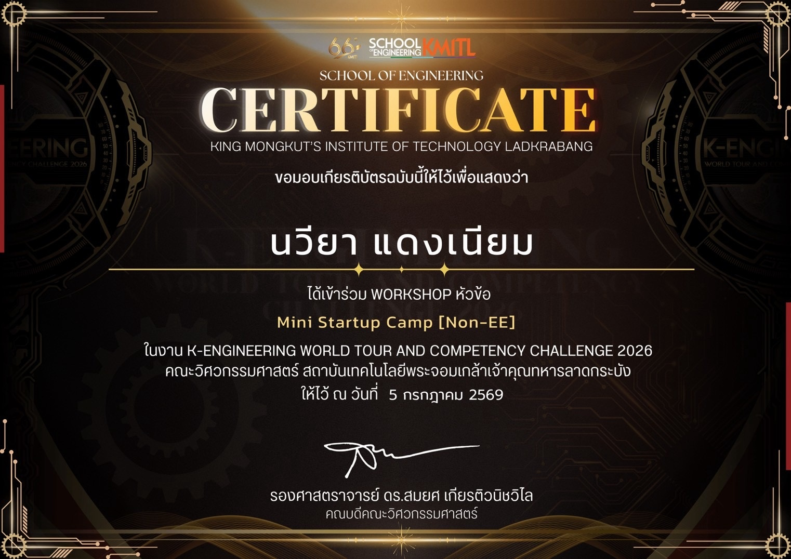
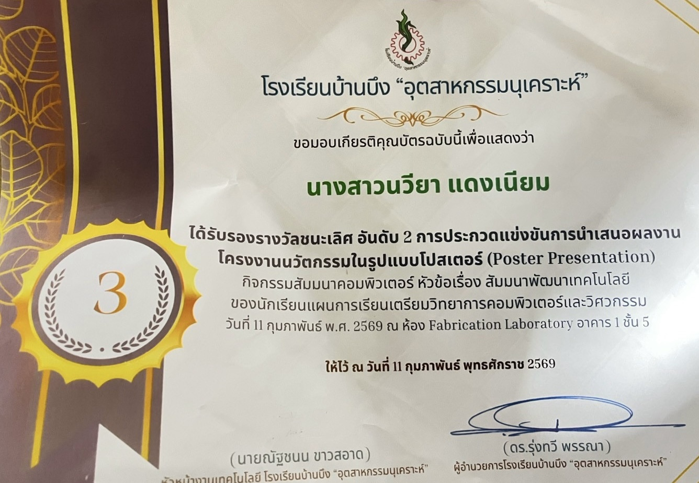

คำนำ
แฟ้มสะสมผลงานเล่มนี้จัดทำขึ้นเพื่อรวบรวมประวัติส่วนตัว
ประวัติการศึกษา ความสามารถ กิจกรรม โครงงาน ชิ้นงาน
และผลงานต่าง ๆ ที่ข้าพเจ้าได้ทำตลอดระยะเวลาที่ผ่านมา
การจัดทำแฟ้มสะสมผลงานนี้มีจุดประสงค์เพื่อแสดงให้เห็นถึง
ความตั้งใจ ความสามารถ ความรับผิดชอบ และประสบการณ์
ของข้าพเจ้า รวมถึงเป็นแนวทางในการศึกษาต่อในระดับมหาวิทยาลัย
ข้าพเจ้าหวังเป็นอย่างยิ่งว่าแฟ้มสะสมผลงานเล่มนี้
จะช่วยให้ผู้อ่านได้รู้จักตัวตน ความสามารถ
และเป้าหมายของข้าพเจ้ามากยิ่งขึ้น
จัดทำโดย
นวียา แดงเนียม
แนะนำตัว

นวียา แดงเนียม
ชื่อเล่น : เหนือ
วันเกิด : 21 เมษายน 2552
ระดับการศึกษา : มัธยมศึกษาปีที่ 6
โรงเรียน : บ้านบึงอุตสาหกรรมนุเคราะห์
เกี่ยวกับฉัน
เป็นคนที่มีความตั้งใจในการเรียน ชอบเรียนรู้สิ่งใหม่ ๆ
และสนใจด้านวิทยาศาสตร์ เทคโนโลยี และการออกแบบ
พร้อมพัฒนาตนเองและเรียนรู้จากประสบการณ์ต่าง ๆ
รายละเอียดการศึกษา
ประวัติการศึกษา
ประถมศึกษาตอนต้น โรงเรียนวัฒนดรุณวิทย์
ประถมศึกษาตอนปลาย โรงเรียนวัฒนดรุณวิทย์
มัธยมศึกษาตอนต้น โรงเรียนบ้านบึงอุตสาหกรรมนุเคราะห์
ปัจจุบันกำลังศึกษาอยู่ในโรงเรียนบ้านบึงอุตสาหกรรมนุเคราะห์ ระดับชั้นมัธยมศึกษาปีที่ 6
ห้องเรียน วิทย์คณิต เตรียมวิศวกรรมศาตร์
วิชาที่สนใจ
• วิทยาศาสตร์
• คณิตศาสตร์
• ภาษาอังกฤษ
• เทคโนโลยี
ทักษะและความสามารถ
• สามารถใช้คอมพิวเตอร์และโปรแกรมพื้นฐานได้
• มีความคิดสร้างสรรค์
• สามารถทำงานร่วมกับผู้อื่นได้
• มีความรับผิดชอบ
• พร้อมเรียนรู้สิ่งใหม่ ๆ
มหาวิทยาลัยที่อยากเข้า

มหาวิทยาลัยที่ใฝ่ฝัน
มหาวิทยาลัย :
สถาบันเทคโนโลยีพระจอมเกล้าเจ้าคุณทหารลาดกระบัง
คณะที่สนใจ :
คณะวิศวกรรมศาสตร์
สาขาที่สนใจ :
สาขา คอมพิวเตอร์
เหตุผลที่อยากเข้า
เนื่องจากเป็นมหาวิทยาลัยที่มีหลักสูตรที่ตรงกับ
ความสนใจและเป้าหมายในอนาคต อีกทั้งยังมีสภาพแวดล้อม
และโอกาสในการพัฒนาความรู้และทักษะที่หลากหลาย
ผลงานที่ภูมิใจ

ผลงานที่ 1
ชื่อผลงาน :
................................................
รายละเอียด :
................................................
สิ่งที่ได้รับ :
ได้ฝึกความรับผิดชอบ การทำงานเป็นขั้นตอน
และการแก้ไขปัญหา

ผลงานที่ 2
ชื่อผลงาน :
................................................
รายละเอียด :
................................................
สิ่งที่ได้รับ :
ได้พัฒนาทักษะและเรียนรู้จากการลงมือทำจริง